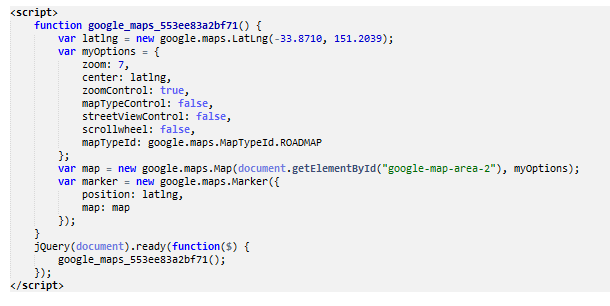
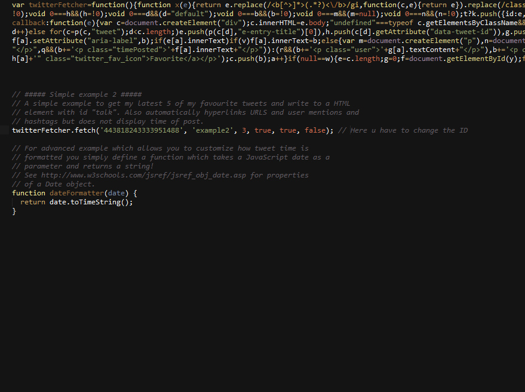

Copyright max-themes 2015
made with the Documenter v2.0
made with the Documenter v2.0
Firstly, a huge thanks for purchasing this theme, your support is truly appreciated!
This document covers the installation and use of this theme and often reveals answers to common problems and issues - read this document thoroughly if you are experiencing any difficulties. If you have any questions that are beyond the scope of this document, feel free to pose them in the dedicated support section.
Go ahead to know more.
After unzip the download pack, you'll found a Template Folder with all the files.
You can view this Template in any browser, you can display or edit the Template without an internet connection.
The three sections that will not work is the Google map Section which contains external link to get the map source.
the Contact form which uses PHP, so will work only online.
and the Twitter Feed which is avaliable only online.
Now open your FTP Client (like Filezilla) or directly through cpanel, upload the content of the Template on your server root.
Once the files are done uploading go to www.yourdomainname.com/index.html
Please follow the tutorial to have a simple installation of the theme.
This Template has a Responsive layout and is based on our own framework.
The default grid system utilizes 12 columns, making for a 1170px wide container without responsive features enabled. With the responsive CSS file added, the grid adapts to be 724px and 1170px wide depending on your viewport. Below 767px viewports, the columns become fluid and stack vertically.
The container which makes the site 1200px has a these classes ".section_wrapper, .container".
For a simple two column layout, add the following classes, "column one-second column_column" to each div.
Given this example, we have .one-third .one-third and anothoer ,one-third, making for 12 total columns and a complete row and 3 columns.
.........
............
......
Each demo, has it's own css styles and it's own js files, most of them are same, we recommend to use the css files that are in each demo, for example, if u use the demo2, use the css folder of that demo. If u run into problem, just contact us, we will be happy to help u with anything.
These are the css files that are loaded into templates in Head Section.
Dont change anything in layout.css file. It may affect the whole theme.
By default, the template loads Ubuntu font and Raleway font from Google Web Font Services, you can change the font with the one that suits you best.
These are the JS files that are loaded into template in end of the Body Section.
The js files are also the same in all the demos, and the Template has loaded all the js scripts in all pages, so u can use whatever u want from the template, wherever u want.
Please follow the first steps of this tutorial, to have a better knowledge how to use the theme, without any problem
The Template has different header styles, and different patterns and of course 5 skins, we will explain how to use every skin and every header style so you don't have any trouble with the theme
In the demo, when opening the style switcher, u will see the option for action bar to be shown, or hide...by default the action bar is hidden, but if u want that action bar to be shown, just add this line of code in the end of a file called custom.css in css folder.
#Action_bar {
display: block !important;
}
<body class="home page page-parent page-template-default template-slider color-custom header-dark header-alpha sticky-header layout-full-width">But if you want the boxed Layout, u need to add this class "layout-boxed" into the body tag, like this:
<body class="home page page-parent page-template-default template-slider color-custom header-dark header-alpha sticky-header layout-boxed">
html {
background: url(../images/patterns/1.png) !important;
}
U can choose whichever patern u want from the pattern palete which can be found in folder images, patterns folder.
u can do the same with other skins too...si if u want the brown skin, add this instead of blue
<body class="home page page-parent page-template-default template-slider color-custom sticky-header layout-boxed header-white header-bg">Note: The white header, will make the navigation also in white
<body class="home page page-parent page-template-default template-slider color-custom sticky-header layout-boxed header-dark header-bg">Note: The dark header, will make the navigation also in dark
<body class="home page page-parent page-template-default template-slider color-custom sticky-header layout-boxed header-white header-alpha">
<body class="home page page-parent page-template-default template-slider color-custom sticky-header layout-boxed header-dark header-alpha">By default the headers are sticky, but if u want them to be in static position, just remove this class "sticky-header" from the body tag and u have a static header.
If u need to have more ore less columns in Megamenu, u can easily change that by adding a number to this class "mfn-megamenu-cols-5", so if u want more columns u changer from 5 to 6, or if u need less columns u can do it from 5 to 4, or 3 or 2.
The code that activates the slider is here:
note, this is a slider that has an id="rev_slider_6_1", u need to name the slider the same as it is in script.
.rev_slider_wrapper {
position: relative;
height: 500px!important;
}
So all u need to do is, to go to custom.css in the end of the page somewhere, and u will find the bg of this inside .homeparallaxsection class...
And as always, if u have any trouble with this, u can allways turn to us.
Google Maps
Using any of our Google map style is very easy. Here is the example of google map added in html pageTo change the Latitude and the longtidude of the map, go to end of page that has the google map and you will see this code

This line
var latlng = new google.maps.LatLng(-33.8710, 151.2039);
means that here u have to change the LAt Lng of the map to your coordinates.Contact Form
Open "contact.php" from the folder "PHP" in theme file.
- Find "#Your e-mail address" and replace it with the email id, where you want to receive the mail.
Icons
U can use icons from fontAwesome, here's the link of the icon map
Twitter Feed
We have a working twitter feed... u can the twitter feeds wherever u want, u can do it in the footer as well... to add the twitter u just add this line of code:U will also need the Java script that enables it... so add this in the end of all the scriptshow to make twitter feeds work with your twitter id?
Please go to google.com and type in twitter widgets, aand go to create new widget, use your username and type "CREATE WIDGET", in the url up you will find an id of your user like this 443872191164059648, copy that id and go back to twitter.js that is founded in js folder, change the existing id with yours there and you are good to go.
Here is an image where you have to change your id with existing one

note: the twitter does not work localy, it works only online , and while you are offline the the plugin will make you page load slower, but once you are online, everything will be back in normal.
Footer
The footer is made from 3 coulmns, an about us text, the latest post column and the recent comments which are static, and in the end of a footer we have the copyright and the social icons. In the end of the page we have the copyright of the theme.
Remember, u can use the twitter feed in the footer and it will look very nice.© 2015 Cake. All Rights Reserved. Max Themes.
- Replace "Copyright Max Themes 2015. All Rights Reserved" with your copyright info.
Thats it. You are done. Now your website is ready to launch.
This is a very small tutorial for the index.html, but it will help u with other demos too, if u have any trouble setting up the theme, we will be happy to assist you.
Sources and Credits
We have used the following plugins, fonts & images. All fonts, images, icons used in this template are free for commercial use.
Fonts
- Lato, and Raleway from google webfont.
jQuery Plugins
- PrettyPhoto
- Parallax
- Jquery UI
- jPlayer Mediaelement
- Video Box
- Isotope
- carouFredSel
ImagesImages in live preview are not included in the template.
- Images used from Source name
Once again, thank you so much for purchasing this theme.
And if u love our theme, pls rate it with 5 stars :D
As I said at the beginning, We'd be glad to help you if you have any questions relating to this theme. We I'll do our best to assist. If u have question u can ask us here.
Thanksmax-themes